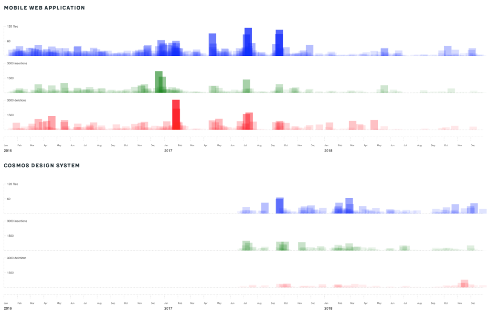

Badoo - Measuring the Impact of the Design System
Is it possible to measure the impact of the adoption of a design system on the workload of a team?
This is the question that I tried to answer, when I started this small side project. I've used a Node.js script to parse the git history of our Badoo Mobile Web application, extract the information relevant to the UI layer (CSS), and aggregate the data over a three years timescale. I have then plotted the data using D3.js in different formats of data-visualisation. The results were beyond imagination.
It was clearly possible to discern two periods in time, before and after the adoption of the design system. The first period was caractherized by large and frequent changes to the UI code; the second period by smaller and less frequent changes. This clearly showed how using a library of reusable UI components has drastically reduced the workload of the UI Engineering team.
I have written about my findings in a Medium post, where you can read in detail about this project, how I have developed the Node.js script, and how I have built the D3.js data visualisation for it.
Read the full story on Medium: https://medium.com/@didoo/measuring-the-impact-of-a-design-system-7f925af090f7
-
Comparison between application and component library - Change
Visual representation of the changes in two codebases, on the top the application and on the bottom the component library.

-
Comparison between application and component library - Frequency
A similar visual representation of the changes in two codebases, this time using rectangles instead of circles. In this case it's more evident the high frequency of change before the adoption of the component library.

-
Frequency of change
The difference between before/after the introduction of a design system becomes even more self-evident when you compress horizontally the scale. In this case, the areas on the left get more opaque, while the areas on the right remains relatively transparent. This means that on the left we have many frequent medium/large changes, on the right infrequent small changes.